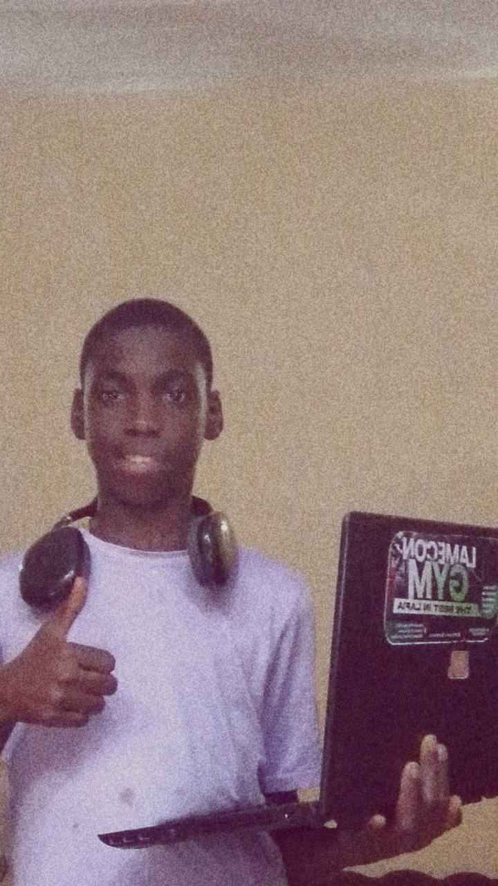

BIOGRAPHY

Early Life & Education:
Mohammed Faisal Magaji A.K.A (Psycho Dev), born on April 19 2011, is a nigerian Cybersecurity
enthausiast . He is the son of Mohammed Rajab Magaji (father) and Ramatu Umar Na,ali (mother). He began his educational
journey at Islamic Center Keana, Nasarawa State. Where he laid the foundation for his future academic pursuit. He then attended
Al-Huda nusery and primary school Lafia Nasarawa state and did primary 1-2, And then went to Great Geoford Children School Lafia,
Nasarawa State and did primary 3-5, And then went to Hill Academy Secondary school Lafia Nasarawa State and did only JSS-1, He then
went to Metro Science Secondary school Lafia Nasarawa State and did only JSS-2, He then went to Goldchild International Colledge and
started JSS-3 which he began to have passion for Cybersecurity and Coding. which he further his studies in that school and is in SSS-2
now, and wish to further his studies in Cybersecurity.
Career Intrest:
Magaji is passionate about Cybersecurity, particularly in the Ethical Hacking sector.
He aspire's to become a Cybersecurity specialist helping organisatons protect themselves against cyber threats.